Cleanup pass: what is wrong on styling/phase-2 since 0.69.5
Checked on the tip of styling/phase-2 (def75d11, 0.71.0) against 0.69.5. Nothing has been fixed. Each finding says whether 0.70 caused it or whether it was already there, the fix we suggest, and how big that fix is.
In short
- The work streams collided in one place: the new Wrap text option (#309) changed how every static Table lays out its rows. Labels and values no longer line up, and rows are about 50% taller. It shows on almost every spec page. This is the main reason 0.70 looks sloppy (finding 1).
- One other change from 0.70 broke a check: in Windows high-contrast mode, a pressed button no longer shows as selected (#311). The fix is ready in PR #327.
- Most red checks are older than 0.70. The CI run on the 0.69.5 release itself (run 40076934376) already failed pages, targets, typography and the DataGrid check. Base CI has not been green since before 0.69.5.
- Header facts are applied unevenly: numbers and dates are in two different fonts in the same header, and two headers show the same fact twice (findings 2 and 3).
- Two rules you approved on 2026-10-24 are not applied yet: no corner over 6px, and no icon in a box. They were never part of a merge, so these are not collisions (findings 4 and 5).
- Everything else you approved looks as approved: Fluent buttons, 4px control corners, the header divider, the status box, the Structured app headers, grid lines, the command bar, segmented controls and checkboxes.
Suggested order
- Merge the fixes that are already approved and ready: #327 (high contrast), #293 (DataGrid header middle), #315 (empty Table), #328 with spec #3 (Mono facts), #329 (dashboard date).
- Fix finding 1 (Table rows): one CSS change. Since it changes pixels, you see the picture first.
- Fix the test problems (iOS pages, targets accepted cases, check-system in worktrees), then re-record the stale baselines once.
- Run the full suite once more. Release when it is green.
- Findings 3 to 6 need your choice. They can wait until after the clean release.
Part 1 · Visual findings
1 · Table rows: labels sit lower than their values, and rows grew about 50% taller (new in 0.70.0, from #309)
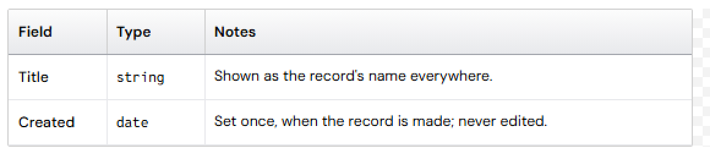
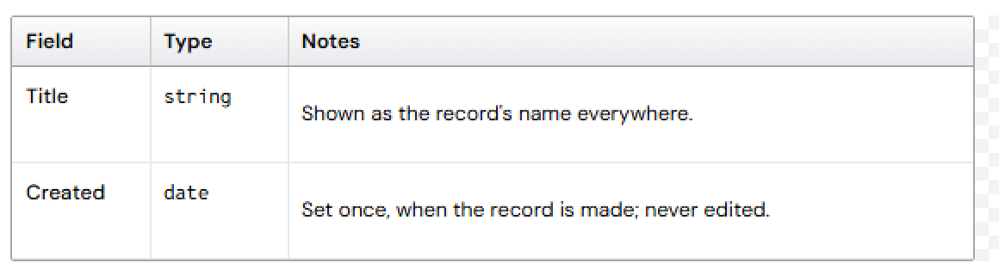
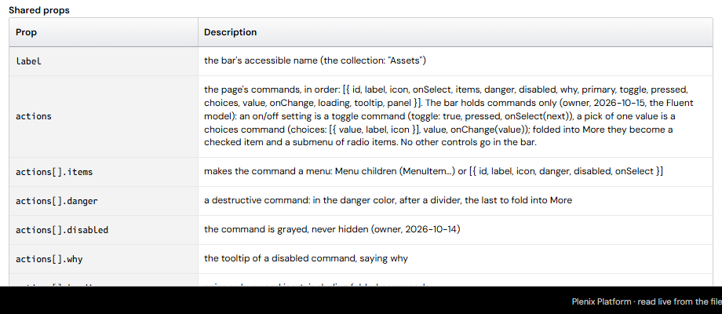
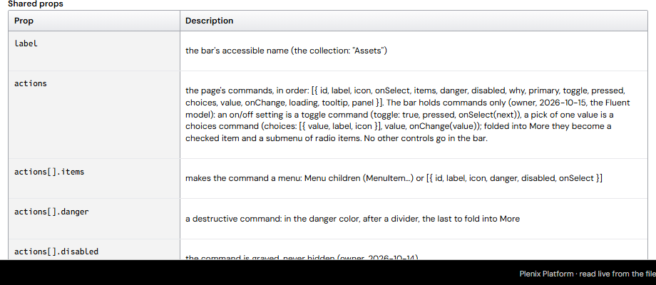
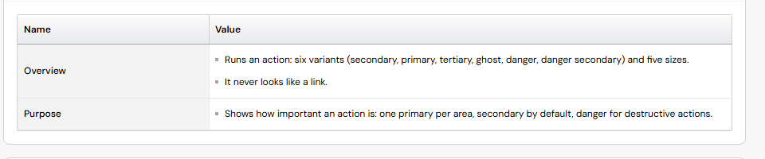
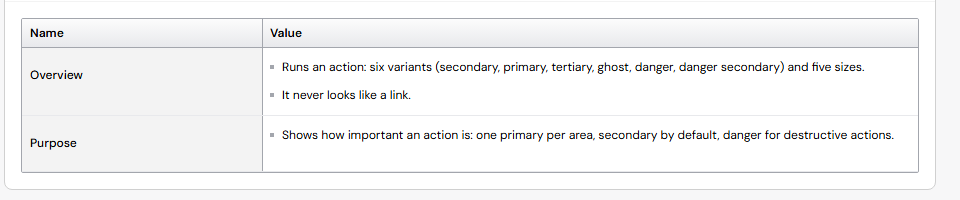
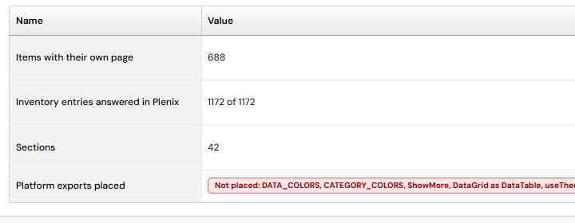
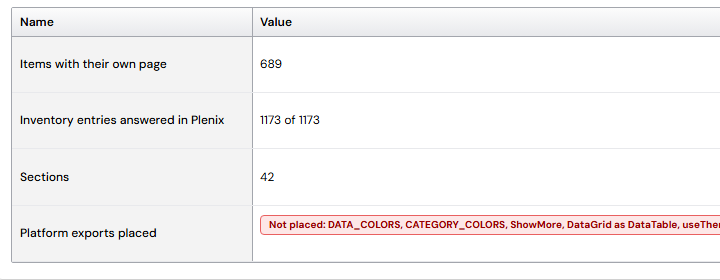
- Where: the Table component, so every spec page (Overview, Props, Attributes, Lab, Anatomy tables) and any app Table with a wrapping column. Spec pages are 5% to 12% longer because of it (Button, Checkbox, Card, Command bar measured).
- What you approved: "wrapped rows start at the top", with wrapped lines at the reading line height (Table wrap spacing, option A).
- What went wrong: the wrap padding is added twice, once on the cell and again on the text inside it. A cell that has the inner text gets 8px to 10px more space above than its neighbors. Measured on the Button page: label text at 465px, value text at 457px, in the same row.
- Also: the spec marks its text columns as wrapping, so every spec row counts as a wrapping row, even rows with one line.
- The typography test's main failure is the same problem (#256, kind 1: code cells vs "Drawn above").
- Suggested fix: keep the wrap padding in one place (the cell) and remove it from the text inside, in
data-grid.css(Table's stylesheet is generated from it). Every cell in a wrapped row then starts on the same line, as you approved. Check the DataGrid's Wrap text option with the same pictures. - Size: small (a few CSS lines, one stylesheet, regenerate Table). A pixel change, so you see before/after first.
1 · The fix: PR #331, before and after
Each picture: 0.69.5 on the left, the tip (0.71.0) in the middle, PR #331 on the right. Built from the PR in a clean copy.
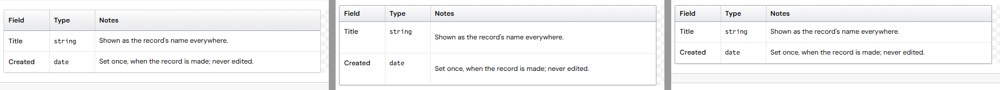
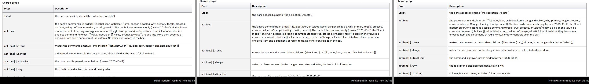
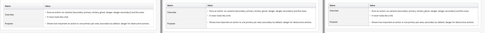
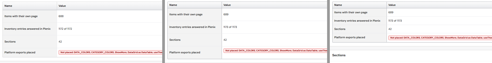
- Measured (text distance from the row top):
- Table example (Field / Type / Notes): 0.69.5 10 / 10 / 9px, tip 9 / 9 / 19px, PR #331 9 / 9 / 9px.
- Command bar props (prop / description): tip 9 / 19px, PR #331 9 / 9px.
- Rows whose value is a bullet list: label 9px, first bullet 11px. The 2px comes from the bullet list's own spacing, not from the wrap.
- One difference from 0.69.5: one-line spec rows are about 34px tall instead of 52px, because every cell now starts at the top with the wrap spacing once (your option A). Say if you want the 0.69.5 row height back.
- PR #331 is this fix; no second PR was made. It also fixes typography kind 1.
2 · Header facts: numbers and dates in two fonts (applied unevenly)
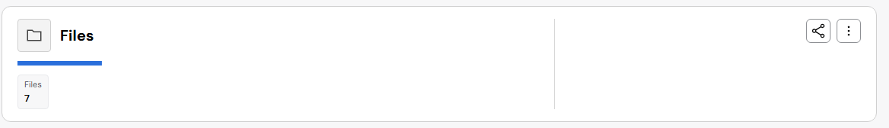
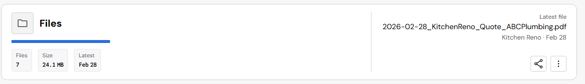
- Where: the app page headers with facts (Structured headers, #317), for example Files, Messages and Tasks, and the record page in the spec.
- What you decided: numbers in Mono, words in the normal font (#260), and header fact dates and numbers in Mono (#256, 3A).
- Why it is uneven: the Structured headers (#317) shipped before the Mono fix (PR #328). Values that are already formatted (sizes, times) come out in Mono; plain counts and dates don't.
- Suggested fix: merge PR #328 and spec PR #3 (spec first). Also check the summary's time ("10:24 AM", "Feb 28") under the same rule.
- Size: small. Ready and approved; the summary line is one more small change.
3 · The same fact shown twice in one header (new in 0.70.1, from #317)
- Files: the fact "Latest: Feb 28" and, beside it, "Latest file … Kitchen Reno · Feb 28".
- Messages: the fact "Last: 10:24 AM" and, beside it, "Latest … 10:24 AM". The summary also wraps, leaving "Friday." alone on its line (picture above).
- Your choice (2026-10-25): remove the duplicate facts. Done in PR #334, which also covers Contacts ("Last message") and Projects ("Due").
PR #334: the current base (with #328) on the left, the PR on the right.
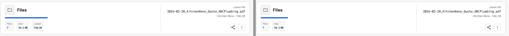
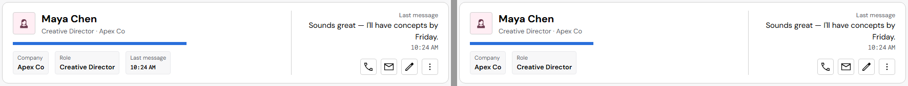
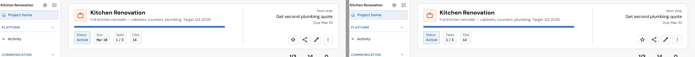
Fix PRs (open, not merged)
- #331 (DataGrid session): table wrap padding once. Verified above; it is the fix for finding 1.
- #332: check-system reads a checkout under .claude/ (#307).
- #333: pages test waits for the first iOS page to draw.
- #334: no header fact that repeats the summary.
- #327 and #328 are merged.
4 · Frames still have corners over 6px (older; your rule of 2026-10-24 is not applied yet)
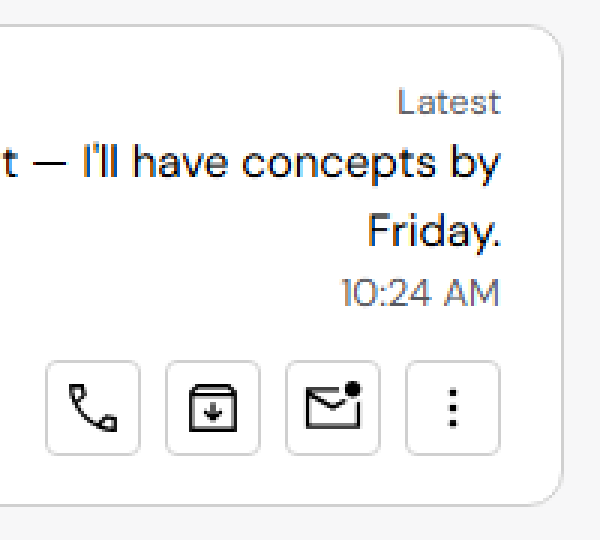
- Measured on all 11 apps (identical at 0.69.5):
- 12px: page headers (EntityHeader), cards, chat bubbles, media cards in the Asset Manager.
- 8px: panels (dashboard), settings sections, the command bar frame, previews.
- Controls are fine: buttons, fields, selects and the nav are all 4px or 6px. Avatars mix 4px and 6px.
- Suggested fix: point the frame radius tokens (card, panel, header, bubble, media) at the 6px value. Tokens only; no new values.
- Size: medium (one token pass, many surfaces change). A pixel change, so pictures first. Can come after the clean release.
5 · Icons framed in a box in the app headers (older; your rule of 2026-10-24 is not applied yet)
- Where: the media tile of the app page headers that show an icon (the Files folder, the Tasks check). See the Files picture in finding 2.
- Rule: an icon is never framed in a box; it takes the box's full size (#314, a Start card in Governance, not started).
- Size: medium (EntityHeader media and IconTile). A pixel change. Can come after the clean release.
6 · List rows touch the card edge (older, not from 0.70)
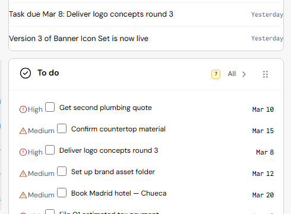
- Where: dashboard Notifications and Notes, and the Tasks list (checkboxes and due dates touch the frame). Same at 0.69.5.
- Size: small. A pixel change; can come after the clean release.
Checked and fine (as you approved)
- Buttons in the Fluent look: lighter border, 4px corners, pressed and disabled states (Button page, all apps).
- The command bar, segmented control and checkbox: the same as 0.69.5 apart from the 4px corners. Measured: the command bar's buttons sit exactly in the middle (9px above and below).
- DataGrid: the status badges now sit in the middle of their pill (better than 0.69.5); lines, header and selection as approved.
- Structured headers in the apps, the header divider, the status box, Jordan Avery as the sample person.
- The Asset Manager and Settings change only in their control corners.
Part 2 · The checks
"Older" means the same check failed the same way on the 0.69.5 release run (40076934376) or on runs before the first 0.70 merge. The full CI run (40166073956) ran on 0.70.0. The full local run on the tip is still going, and its results will be added here.
Build, check-system, check-spec: green
- Build: OK. The bundle only differs in the path labels of node_modules when it is built from another folder (harmless).
- check-system: SYSTEM_OK in a clean copy, at the tip and at 0.69.5.
- check-system in a worktree (#307), cause found: it reports 783 false findings because its file walk skips every path that contains
.claude. Worktrees live in.claude/worktrees/, so it reads no files at all there. Fix: test the path relative to the repository. Size: small. - check-spec: SPEC_OK (1,173 leaves, 689 records).
Pages: the iOS spec pages are "empty" (older, a test problem)
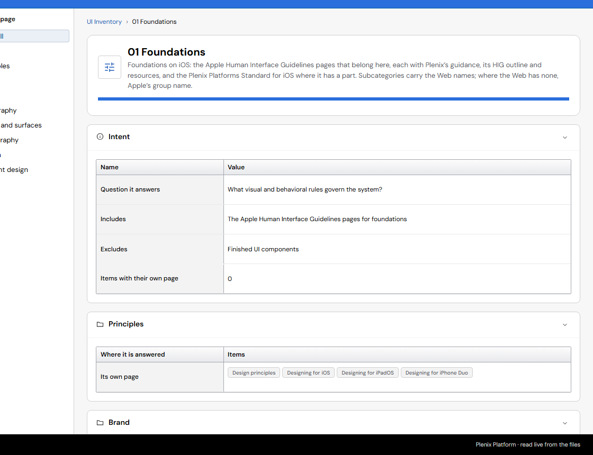
- Fails: ios-foundations and ios-layout on every run since before 0.69.5; all 8 iOS pages in the full run.
- Cause: the test changes the address and waits 250ms. The first iOS page has to load the iOS files first, so it is still empty at 250ms. Opened on their own, the pages draw in full at both versions.
- Fix: the test waits until the page has text (up to a few seconds) before it calls it empty. Size: small, test only.
- Also seen once: #/page-structures/record-page/v/all threw "Cannot read properties of null (reading 'CSSStyleSheet')" in the full run. The page opens without errors on its own; the local full run will show whether it repeats.
Targets and reflow (older; fewer findings than at 0.69.5)
- Count: 53 pages worse on 0.69.5 (full run, local), 32 on 0.70.0 (full CI run), 14 in the tip's sample. Reflow passes.
- Nav-pane splitter, 8px wide: your decision (#217) is to keep it. Fix: record it as an accepted case in the test so it stops failing. Size: small.
- DataGrid header cells (28px tall) and menu arrows (18 to 24px) on touch: 44px touch targets belong to #52. Fix: the same accepted list, pointing at #52. Size: small.
- Links alone in a spec table cell ("All buttons", 61×17px): flagged because nothing surrounds them, so the inline-link exception does not apply. Options: A · the test treats a link in a table cell as text; B · the spec gives these links a full-height row target. Size: small.
Typography (older; analysed in #256)
- Count: 81 checks worse on 0.69.5 (full run, local), 58 on 0.70.0. 0.70 made it better, not worse.
- Kind 1, spec tables with code (50 of 54 checks): the same problem as visual finding 1. Fixed by that fix.
- Kind 2, dashboard due dates 3.5px off the label baseline: PR #329, approved.
- Kind 3, header fact dates in the normal font: PR #328 with spec #3, approved (finding 2).
- Then: re-record the baseline once (it dates from 0.31.40). Size: small after the three fixes.
Behavior: DataGrid wrapped header 4px off middle (older)
- Cause: in Compact, the header titles of a view with wrapped headers sit 4px above the middle. It shows since the stale grid tests were fixed right after 0.69.5 (c9269360); the old test stopped earlier.
- Fix: PR #293, approved (titles stay left-aligned). Size: small, ready.
Fixtures: high contrast, a pressed button (new in 0.70.0, from #311)
- Cause: in Windows high-contrast mode a pressed (selected) button keeps the Fluent see-through fill instead of the system's Highlight color.
- Fix: PR #327 (tokens only). Size: small, ready.
Accessibility (full run only; all four also on 0.69.5)
- Empty static Table on #/foundations/icon: a row group with no rows. Fix: PR #315, approved. Small.
- Code block on #/data-display/card: the code box has a label that its element may not carry. Fix: give it a role or drop the label. Small.
- Number input on #/forms/input-group: the name is written as
label="Quantity"on the field, which no screen reader reads. Fix: pass it as the field's accessible name. Small. - EntityHeader facts list on #/specialized/commerce: the fix for this (c9897642) reached the record page but not the Commerce order header. Small.
- Checked with axe on both versions; CI calls them "new" only because the full-run baseline is out of date.
The full local run on the tip (def75d11, 08:23 to 12:54 UTC)
- Same as CI: data-grid 40/42 (#293), typography 58 worse, targets 32 worse.
- Pages and accessibility: stopped at their 90-minute limit, because on one machine they run unsharded (CI splits them into 4 and 2 parts). No result; the CI full run is the one to read.
- zero-overlap (466), not run by any CI job: its stored Button styles still show the pre-Fluent look (border gray 142 instead of 208, selected text blue instead of black). The Fluent change (#311) is approved, so the stored values need re-recording; Governance's notes say PR #323 does that.
- Not real failures: types ("typescript" is in package.json but missing from the shared node_modules here; CI installs it) and high contrast (my own picture server was on its port).
- Passed: labs 302/302, visual, density, layout, theme, keyboard, reflow, contrast, formats, utilities, focus order, semantic HTML, navigation, brand rules, login, selector kinds.
- Before the release: one full run on the merged head, in CI (sharded), with the fix PRs in.
Passing
- Labs (all shards), reflow, visual (5,058 buttons), density, layout, theme, keyboard, utilities, focus order, semantic HTML, navigation, and accessibility in changed mode.
Part 3 · The release gate on the merged head (52a4dc27)
Full CI run 40198784659, after merging #323, #327, #328, #331, #332, #333 and #334. Six findings. Nothing has been fixed; each needs your choice.
1 · Three spec pages crash: "Cannot read properties of null (reading 'CSSStyleSheet')" (older, also in 0.71.0)
- Where: one page per pages shard in CI (#/layout/dashboard-grid, #/specialized/prompt-history, #/patterns/save-as). The 0.70.0 full run hit it once too (#/page-structures/record-page/v/all). The page that gets the blame changes with timing.
- Cause: the spec's sample code (
DS.varClassinds.js) builds its sample sheet through the page's window. When it runs for a preview frame that has already been removed, that window is gone (null), and it throws exactly this message. Proven directly: remove an iframe, then callDS.varClasson its document. - Not from 0.70: this code is in 0.69.5, 0.70.0 and the released 0.71.0. It shows only with CI's timing; locally, all four page shards on the merged head ran without it.
- Not the suspects: plenixTokens (#158) and the Tooltip (#323) don't use this code path.
- Fix (a plain bug, PR ready): plenix-design-system#4. A closed frame has nothing left to draw, so the sample code skips it: 3 lines in
ds.jsandcomponent-lab.js. SPEC_OK. Then the integrator moves the spec pointer. - Option for later: a DataGrid drawn into a frame that is then removed fails the same way (another message, "innerHeight"). CI has not hit it. Options: A · the spec unmounts what it draws into a frame when the frame goes; B · the DataGrid ignores a closed document. Both small.
- Also seen once locally: #/specialized/document-viewer/v/document-viewer-text, "Worker was terminated" from the PDF viewer (pdf.js) when the page is left while a PDF loads. Timing; not in CI's run.
2 · DataGrid wrapped header 4px off middle (older)
- Cause: unchanged from Part 2. In Compact, the titles of a view with wrapped headers sit 4px above the middle.
- Fix: PR #293, approved and mergeable (9786133d). Size: small, ready.
3 · Typography: 4 checks, Streamlined header values in the normal font (left over from #328)
- Where: #/page-structures/record-page, light and dark: "Apr 12, 2027", "3.2 MB", "3840 × 2160".
- Cause: the Streamlined header writes its subtitle as text with
**bold**parts ("Uploaded **Apr 12, 2027** · **3.2 MB**"). #328 put fact values in the data font, but these bold parts are not facts, so they stay in the normal font. - Options:
- A · EntityHeader draws a bold part that is a date, number or size in the data font (the same test as the facts). Size: small, component.
- B · The spec examples mark these values as data explicitly, and EntityHeader draws marked parts in the data font. Size: small, component and spec.
- Suggested: A. It follows your rule (#260) without changing the examples.
4 · Accessibility: 4 issues (all older, also on 0.69.5)
- Empty static Table (#/foundations/icon): PR #315, approved. Small, ready.
- Code block (#/data-display/card, ×5): the code box carries
aria-label, which its element may not have. Options: A · give itrole="region"with the label (it is a scrollable, focusable area); B · drop the label. Suggested: A. Small, component. - Number input (#/forms/input-group, ×4): the spec's example passes
label: 'Quantity'to NumberInput, which has no such option, so it lands on the field as an attribute nothing reads. Fix: the example usesaria-label(or a Field with a label), as NumberInput's own examples do. Small, spec only. A plain bug. - Facts list in the Commerce order header (#/specialized/commerce): the dl fix (c9897642) did not reach this header's layout. Fix: the same fix in that layout. Small, component.
5 · Targets: 32 pages (older; nothing new in kind)
Your decision (2026-10-25): "Remove tap areas from all tests." Done in PR #336, which replaces #335; the 871 mobile findings are on #52 as information only. The analysis below is kept for the record.
- Nav-pane splitter (8px wide) on every app page at touch size. At mouse size you accepted it (#217). Touch size (44px) belongs to #52.
- DataGrid header cells (28px tall) and menu arrows on touch: #52.
- Spec links in tables ("All buttons", "Tokens"): links alone in a cell are counted as small targets.
- The baseline dates from 0.31.71, so every page counts as "worse".
- Options: A · record the accepted and #52 cases in the test so it fails only on new kinds, and re-record the baseline once. B · keep it failing until #52 is done.
- Suggested: A. Small, test only.
6 · Reflow: the Files header's file name runs past the card at 320px wide
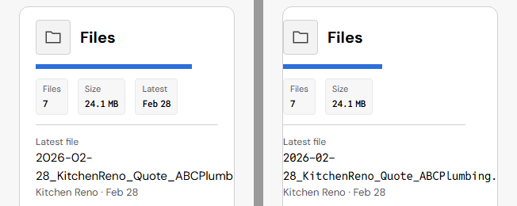
- Cause: the latest file's name ("2026-02-28_KitchenReno_Quote_ABCPlumbing.pdf") has no spaces, so it cannot wrap. It was already cut off in 0.71.0 (since the Structured headers, #317), but hidden at the card's edge. Since #328 it is in the data font and runs past the card, so the test now sees it.
- Options:
- A · Long names in the header summary may break anywhere (the whole name shows, on two or three lines). Size: small, component CSS.
- B · The name stays on one line and ends in "…", with the full name in a tooltip. Size: small, component.
- Suggested: B for file names (they are long), as the file list beside it already does.
How this was checked
- Two clean copies: v0.69.5 (0b7af35d, spec b3cfab7f) and the tip (def75d11, spec 7f9216ec), served side by side.
- Every app and 18 spec pages captured at both versions, compared pixel by pixel, then the changed areas checked by eye and measured in the page.
- CI read: the full run 40166073956 (0.70.0), the tip's run 40169144389, the 0.69.5 release run 40076934376, and four runs between them.
- The full local test run is logged in
tools/agent/proof-log.md.